4 Using ITRF Survey Points
In this module we will devote our attention to the methods of geodetic measurements processing. Previously we have already spoken about the use of GNSS in aerial photography, that is why it will be logical to proceed to GNSS processing. This module can be divided into 3 parts: Static GNSS data processing, Kinematic GNSS data processing and GNSS processing with ITRF survey points usage. Static measurements are mainly used to create a long-term geodetic basis, as well as to SGN points quality check. In complex and large-scale projects requiring the surveying of several thousand kilometers, it is paid a serious attention to the State Geodetic Network verification. As you already know, the SGN provides uniform coverage of the country’s territory with points with known coordinates. In theory, remembering that the distance between UAV and base station must not be further than 30 km, aerial photography can be carried out at almost everywhere in the country using the nearest SGN point. Unfortunately, in practice this can be done in a minority of cases, especially if this work is carried out in far territories. There are several reasons for this. The loss of points and centers due to vandalism, building, natural disasters, as well as the inability to find these points due to the loss of the signal pyramid and extremely bad reference cards. For the example, it may be written in the card that the point is 80 steps north of the trail after turning from a forest edge. On such landmarks, finding a point can be very difficult. It is possible to solve the search problem, but it requires a lot of time and labor. For example, if you need to find a specific point, you can take GNSS measurements at neighboring unbroken points, calculate the adjusted parameters for the transition from the WGS84 coordinate system to the local coordinate system. And then, using RTK technology in the point offset mode, try to find this point. However, this approach does not give a 100% guarantee of finding the desired point. Another problem is the inaccurate coordinates of the SGN points. Why can this happen? Despite the high requirements for laying the points centers and the high structural strengths of the centers themselves, displacements of the centers can still occur due to various factors. Also, not all triangulation and polygonometry points have a millimeter defined height. Well, the most important affecting factor is the SGN adjustment error during the transition from the SK-42 coordinate system to the SK-95 coordinate system. Of course, the points coordinates errors in SK-95 are distributed much more evenly. This is due to the fact that the network was equalized in a single way, in contrast to the block method used in SK-42. Well, now we know that the coordinates of some points may be inaccurate, and some of the points are completely lost, or their location cannot be found. During aerial photography planning, it is tried taking into account all the features of the geodetic network at the works area. In order to find out which points are unbroken and have the smallest error, it is better to contact representatives of survey companies in the work region. If there are few points, or their quality is not confirmed, it should be provided in the work project the geodetic network thickening and the laying of new relatively long-term centers. These new points should be preserved during the whole field work period, and preferably even longer. Another reason for the full range geodetic work implementation may be the presence in the contract not only aerial photography, but creation of a topographic plan, construction axes offset and other subsequent work. When designing new satellite networks, it is tried selecting the starting points in such a way that the figures are similar to those shown in the picture. Such a layout allows you to achieve the smallest errors. Another task where static observations are used is the GCPs coordinates determination. This method is used when it is impossible to use kinematic methods such as RTK. The reasons are lack of such equipment, difficult terrain conditions in which the radio signal is distributed poorly. Or lack of mobile communication towers and the inability to use the GSM protocol. Ceteris paribus, when choosing a GCPs determining method, static measurements lose to the RTK method in performance, because the observation session time at a point is at least 20 minutes while for RTK it takes a few seconds. Surveyors always try to use RTK method where it is technically feasible. We will talk more about RTK in the second part of this module. Well, we have figured out for what tasks static measurements are used. In the next video we will talk about processing such data.
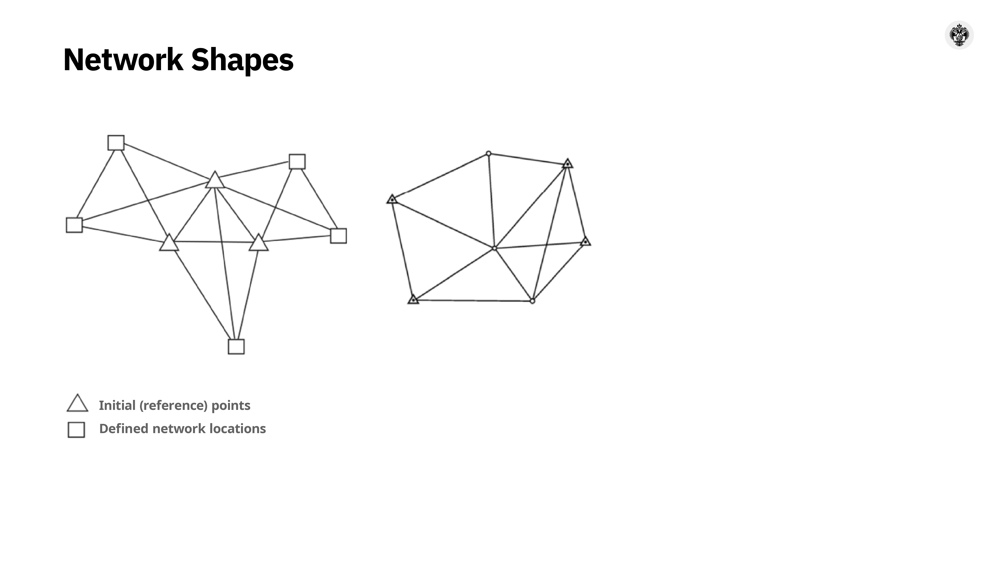
5 Static GNSS Data Processing
Now, we will focus on the basics of GNSS measurements mathematical processing. We learn more about the features and various methods. And also, we will take a very brief look at the market of the software used to process static measurements. Each receiver collects data about satellites and distances to them and writes it to a file.
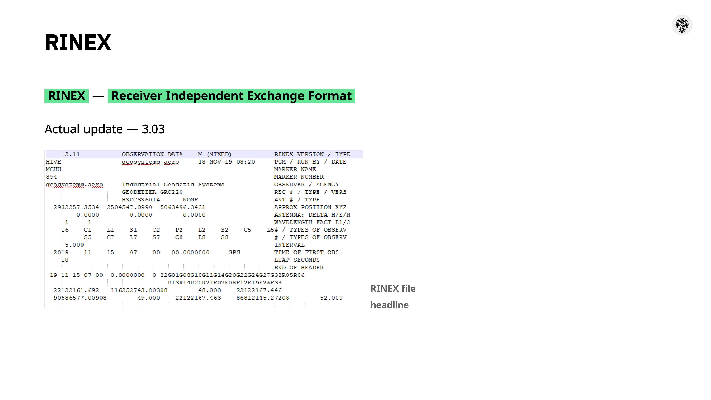
A common format is RINEX. RINEX stands for Receiver Independent Exchange Format - a data exchange format for the source data files of satellite navigation receivers. It allows users to post-process received data. Different receivers may have different data storage formats.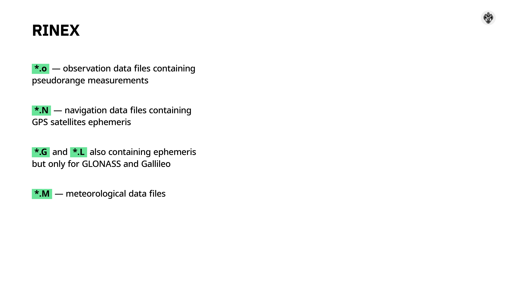
For example, for U-blox receivers, the .ubx file extension. RINEX is a universal format and absolutely every program supports the processing of data contained in a RINEX file. When using RINEX, there may be several file formats. They have the following extension types: .o - observation data files containing pseudorange measurements .N – navigation data files containing GPS satellites ephemeris .G and .L also containing ephemeris but only for GLONASS and Gallileo •.M – meteorological data files. Actual update - 3.03 Let’s talk about methods used to process GNSS measurements.The first of them is the processing of observations made at one station. This method is used extremely rarely and almost never used to control aerial photography. If only code measurements are processed, the accuracy will be several meters. It is not interesting for us. However, during pre-processing it allows you to precise the coordinates of the receiver’s standing point, for further use. The second method is a single baseline method. During the joint adjustment, observations from two simultaneously operating receivers are processed together, mainly by the double differences method. Observation processing of the network divided into primary adjustment (solving baselines) and secondary adjustment (equalizing vectors of baselines). In the simplest case, the concept of only the length of the baseline vector is used, and satellite observations are used simply as a method of measuring distances between stations (trilateration). Trilateration was used mainly at the dawn of satellite measurements in geodesy. It is also worth noting that this technique is not strict if several base stations are used (for network solutions). The third method is the joint adjustment of all received observations of a single session (adjustment of the observations of many stations in one session).In this method, all data that was observed simultaneously by three or more participating receivers is jointly processed. If there are several observation sessions, they can be combined into the adjustment of many sessions or into a solution for many stations and many sessions. This is a common technique when large networks are split into parts due to the limited number of receivers. Not every geodetic company can afford 5 or more satellite receivers. The main condition in such an adjustment is that each session is associated with at least one other session through one or more common stations at which observations were made in both sessions. The expansion of the common stations number increases the stability and reliability of the entire network. Comparing the results of individual sessions provides the best network accuracy control with a sufficient amount of redundant observations at common stations. Software products for processing observations of large satellite networks are usually based on the concept of many stations and many sessions.
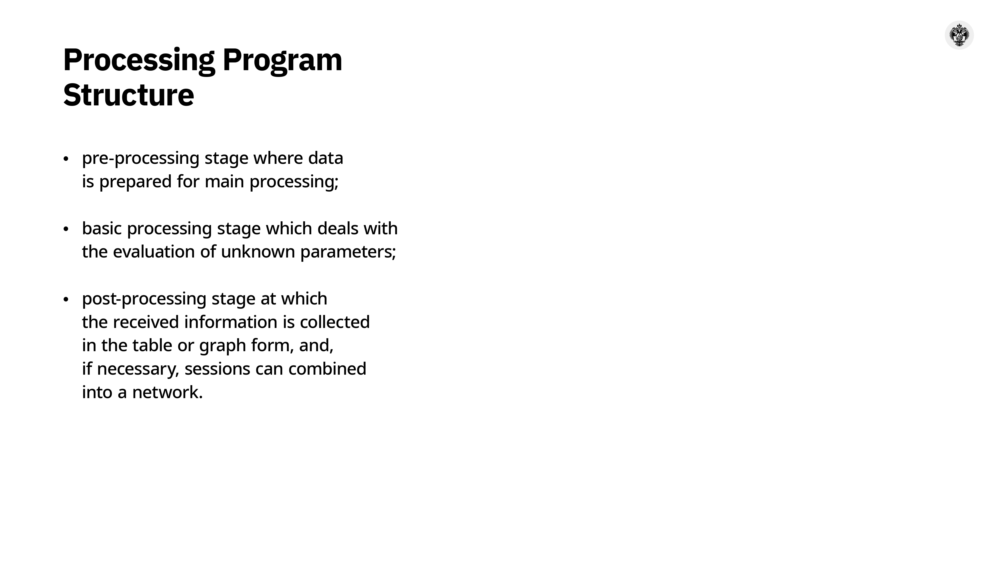
Each software for GNSS measurements processing can be represented in three consecutive parts: •pre-processing stage where data is prepared for main processing; •basic processing stage which deals with the evaluation of unknown parameters; •post-processing stage at which the received information is collected in the table or graph form, and, if necessary, sessions can be combined into a network. Pre-processing begins with the importing “raw” data.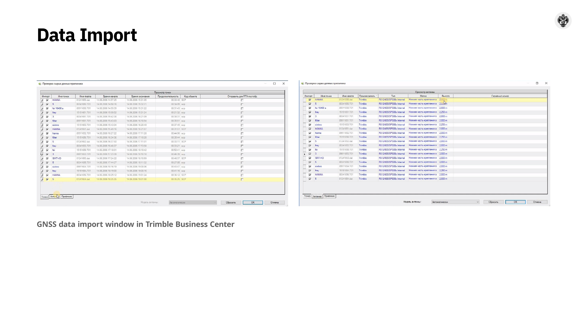
In addition to the data file, it is necessary to add information about the observation time to the database, because some receivers write a log immediately after switching on, but it could happen earlier than the receiver was installed on the point. Also, the measured distance between the point and the special risk on the receiver - - the so-called antenna height is added. It is necessary to specify the antenna profile - this is a file that contains parameters such as the phase center location, geometric characteristics of the antenna. Sometimes the approximate coordinates of the station and information on the meteorological conditions of observation are additionally added. If the aim is to obtain data in the local coordinate system, then the coordinates and altitudes of the points are also entered. Before starting the baseline processing, the user explicitly sets the cutoff angle of the satellites - in good conditions it is 15 degrees. This is necessary so that near-horizon satellites do not affect the final result, because measurements from them are not very good. The second parameter to set is the allowable ratio of signal and noise levels (the so-called SNR mask). The SNR parameter displays satellite signal intensity. This quantity is dimensionless. In the picture you can see the processing preferences window in CREDO GNSS program.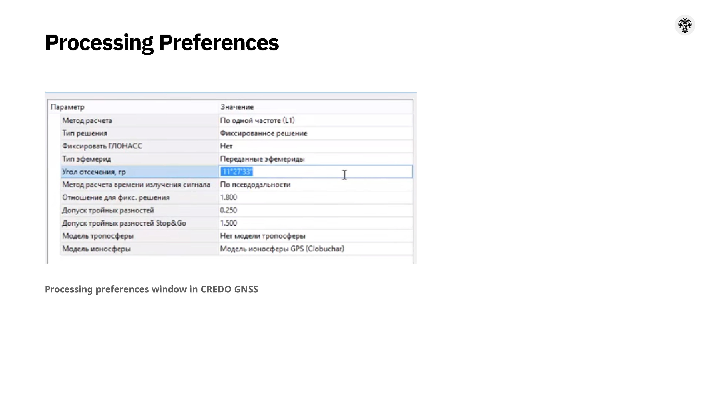
In addition to the listed parameters, the user is available to choose the calculation method - - for one carrier frequency or for two with different additions, different models of the troposphere and ionosphere are also available to choose.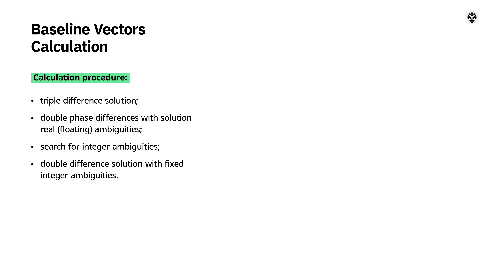
The calculation of the baseline vectors occurs in the second stage. The program’s mathematical processor compares data from receivers, satellite data, other entered parameters and, using difference methods, calculates the exact value of the baseline length. Сalculation procedure: •triple difference solution; •double phase differences with solution real (floating) ambiguities; •search for integer ambiguities; •double difference solution with fixed integer ambiguities. As a result, ambiguous phase observations turn into unambiguous distances observations.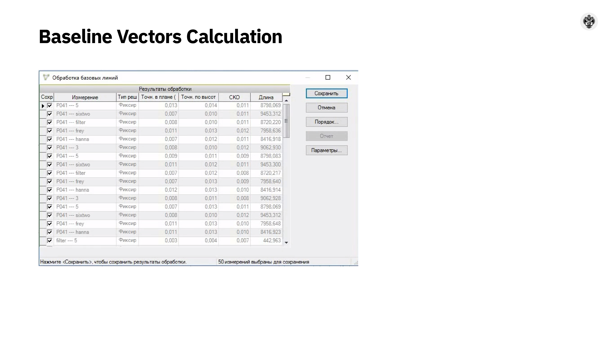
The process is carried out by several approximations until the obtaining a fixed solution. After processing all the baseline vectors in the project, if we have a large number of observation points and if the formation of closed figures is done, we proceed to network adjustment of the project. The errors obtained are monitored using the method of controlling residuals of closed figures. Based on the results of this adjustment, the user receives a generated report. Typically, the report contains the exact coordinates of the observation points, standard errors of determining these coordinates, the network diagram, baselines lengths, the standard deviations for them, and many other custom blocks with adjustment data. The example of a report on the baselines processing we can see on the screen. For vectors types of solutions are given, horizontal and height accuracies, and lengths are also calculated. The market of geodetic software is very large. There are more than two dozen different programs for processing GNSS measurements.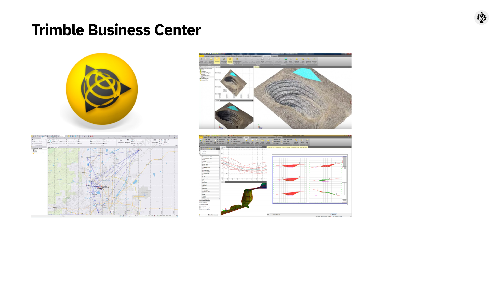
We will briefly talk only about some of them. The entire market of satellite surveying equipment is divided between several large manufacturers. They are Trimble, Topcon, Leica, Javad and Chinese manufacturers - Stonex, EFT, South. In addition, the first four have powerful processing software. The first program on our list - Trimble Business Center. It is a functional and flexible software for solving many tasks - - from processing GNSS measurements to processing of laser scanner points. TBC is an application that consists of modules. Each user chooses only the modules he needs. Trimble follows the path of unification and unites all its users under a single brand. This is due to the fact that the company is widely represented not only in the GNSS equipment market, but also produces laser scanners, drones and total stations. Trimble RTX technology which we talked about earlier is implemented due to TBC usage.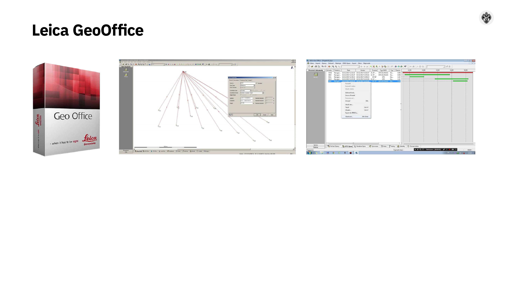
The second program developed by Swiss company Leica - - Leica Geo Office. Since Leica produces total stations, levels and other instruments in addition to GNSS equipment, the program allows you to combine measurements from several instruments to obtain the best result. It can be said that for large companies the creation of multi-tool software has become a trend. Moreover, for example, total stations with built-in GNSS antennas appear on the market, so a comprehensive approach to software is justified.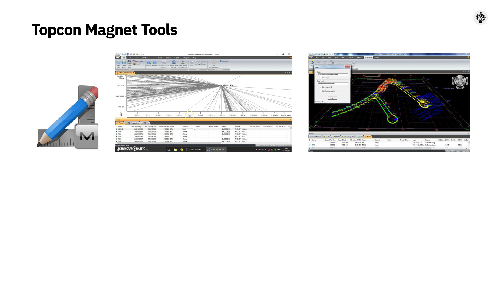
Topcon MagnetTools is another well-known program for processing GNSS measurements. Topcon boards are installed in many unmanned aircraft. For example, Geoscan Geodesy UAVs are equipped with Topcon B111 boards. Due to such a distribution, this software has convenient tools for working with the “events” - moments of photographing and calculating the exact coordinates of photographs centers. At the dawn of satellite geodesy, the Pinnacle program from JAVAD was widely used. This program differs from the previous ones in that it is only for GNSS measurements processing. It had a minimalistic design and was extremely easy to use. Pinnacle support is over since 2007. In conclusion, let’s talk about free software. There is free software that allows the user to process geodetic measurements without spending money on expensive one. Such software is especially important for universities, individuals, or for individual entrepreneurs in areas related to geodesy or where GNSS receivers are used - - for example, in precision farming. Such a program is called RTKLib. This is an open source product. The original development belongs to the Japanese professor Tomoji Takas. However, on the basis of RTKLib, other companies create their own solutions. For example, ReachView from Emlid. Like any other open-source freeware, RTKLib provides a ton of features and a very unpretentious interface. The program supports all popular industry standards and allows GNSS processing of various combinations and methods.6 Kinematic GNSS Data Processing
Now, we will talk about kinematic GNSS data processing. We will consider the main differences from statics processing, will learn for what purposes kinematic is used and in what programs it is most convenient to process.
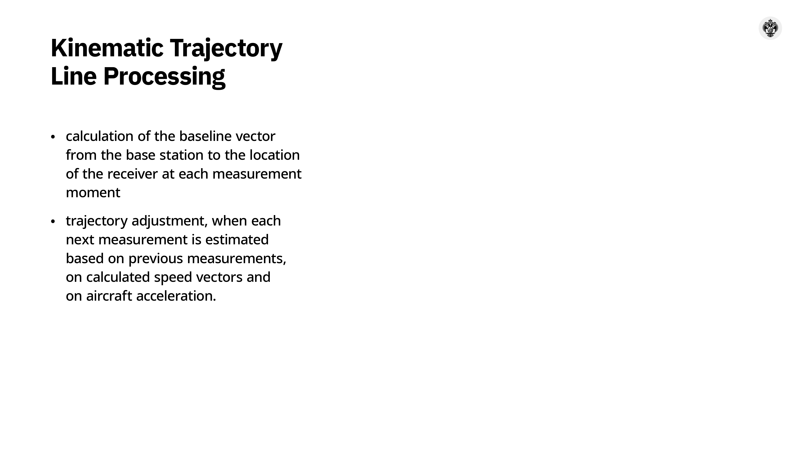
Processing kinematic measurements is significantly more complex and usually more resource intensive then static. This statement follows from a simple comparison. For two static receivers you need to count one baseline. If one of the receivers moves, then in fact the baseline is calculated for each measurement of the moving receiver. There may thousands of such measurements. Let’s recall for what purpose kinematic method is used.First of all, it is used to calculate the exact trajectory of a moving object, the second task - determining the coordinates of events during the movement - this is just about aerial photography. Another task is to control equipment in real time along given routes. But, in this case, no post-processing is applied. Most often, equipment that is used for kinematic measurements has increased requirements for the signal recording frequency. Most receivers used for static measurements do not support recording more than 1 time per second - 1 Hz. Whereas for kinematics the requirements are 5 Hz and even 10 Hz. What is the reason for such a requirement? Imagine flying a Cessna 172 aircraft with laser scanner or aerial photography equipment on board. The cruising speed of the aircraft is 220 km / h. In 1 second the plane flies 61 meters, this is a long distance. If the equipment supports recording with a 10Hz frequency, we will receive coordinates every 6 meters. This will allow us to obtain more accurate and smooth flight trajectory and better materials during processing. The requirement for recording speed also applies to stationary receivers, but almost always they operate at a frequency of 1Hz. If it is not possible to use receivers with high recording frequency for post-processing, it is usually resorted to an artificial increase in recording density by inserting interpolated values into the source file. This method improves the accuracy of the resulting trajectory. Compared with static, we get several times more data for a pair of receivers only due to a change in the recording speed. Flights of unmanned fixed-wing aircraft usually last from 2 to 4 hours. This is comparable to the observation time of a couple of points in static. So, as we remember from the description of the kinematic method, it is necessary to initialize the rover to start work. The rover collects satellite signals for some time in a stationary state. Different systems require from 30 seconds to 5 minutes. During this time, data is accumulated, with the help of which ambiguity is resolved during post-processing. The speed of operation is affected by the number of GN systems and frequencies supported by the receiver, as well as its design features and the quality of internal software. An important factor is the number of visible satellites and their location in the sky. If it is impossible to perform static initialization, it is resorted to the on-the-fly Kinematic method. This is a variant of kinematic measurements that overcomes the need for static initialization. However, it is characterized by a significantly longer initialization time - sometimes 10 or more minutes. And if measurements were taken during this time, their quality is unlikely to be satisfactory. Suppose that the UAV flights were implemented no further than 30 km from the base station. Then, before starting processing, we will have two raw files with measurements and related information. These data are entered into the processing program. The user can immediately see the approximate flight trajectory of the aircraft in a special window. The first step that needs to be done is to check the overlap of the base and the rover in time. It is tried to take measurements in such a way, that the measurements on the base station began earlier and end later than on the rover. Breaks are not allowed both on the base and on the rover. Especially critical are the signal loss on the rover, because the on-the-fly method may not work right away and we won’t get a fixed solution even if observations have already begun. If everything is ok with the data, the adjustment process starts. What happens at this moment and what are the features of the processing? Kinematic trajectory line processing consists of several internal subprocesses. •First subprocess is the calculation of the baseline vector from the base station to the location of the receiver at each measurement moment. •Second subprocess is the trajectory adjustment, when each next measurement is estimated based on previous measurements, on calculated speed vectors and on aircraft acceleration. Basically, if you fly strictly north, the east coordinate does not change and the height is constant. However, if suddenly the east coordinate changes by 10 meters for no apparent reason, the program concludes that this is a rude measurement. For this, a Kalman filter is used. The Kalman filter is an algorithm used in many areas. It is quite simple to implement, but it works reliably. The Kalman filter is intended for the recursive re-evaluating of the state vector of a dynamic system - in our case, the vector of the UAV motion, or rather, changes in its coordinates. The filter algorithm operates in two stages: at the forecasting stage, the Kalman filter extrapolates the values of state variables and their uncertainties. At the second stage, according to the measurement data, the extrapolation result is specified. Thus, the Kalman Filter uses a probabilistic model of the UAV movement dynamics, which allows us to obtain good estimates of the object position in the present, future, or past time. In one form or another, the Kalman Filter is also used in static measurements, since a sudden change in the coordinates of the stationary receiver should not affect the calculations. So, we will back to the trajectory processing. After starting the adjustment, the program starts sequentially in the timeline to calculate the coordinates of each point, like “running” along the entire path to the end. In order to increase accuracy, it is recommended to calculate forward and reverse trajectory line, that is from the last point to the first. With this approach, two trajectories are formed of which, after transformations and merging, the final trajectory is obtained. After processing, it is useful to look through a report showing the difference between the coordinates of two paths. Pay attention to the number 1 in the Status window. In the adjustment process, the solution for each point may be different in quality. For further evaluation, each dimension is assigned a parameter Q (from Quality) with some gradation. For example, from 1 to 5. Where 1 is a fixed solution with the least error. Rating 1 we just saw in the previous pictures. And 5 - the lack of a solution, the so-called navigational measurements. Intermediate values are usually different gradations of a floating solution - Float. The quality assessment of the trajectory line adjustment includes the values of relative values for each Q value. The number of fixed points of more than 90% is considered a very high quality. If photographing was performed during the flight, information about these events is stored in the receiver. Further after processing a separate catalog of coordinates is formed for these points with an assessment of the solution quality. After the adjustment, the user has access to a large number of various reports and event coordinate catalogs for their further use in the photogrammetric processing. Let’s consider software for kinematic satellite measurement calculations. Not all programs are equally suitable for such tasks. As we have already said, when implementing kinematic measurements, large computational powers are required and the amount of data is much larger than in static. From the previously listed software, according to the results of various tests, we can mention Magnet Office Tools. This program is equally good for processing both static and kinematic measurements. It is widely used by companies operating on DJI, Geoscan, SenseFly and others. The next software product is Justin from Javad. With Justin you can solve a variety of construction problems, aerial photography and surveying of engineering and moving objects. The main advantages are the processing of kinematic data with a frequency of up to 100 Hz, the adjustment of kinematic trajectories, the processing of static vectors up to 1000 km, the adjustment and analysis of GNSS networks (over 3000 points in one adjustment). We conclude our review with GrafNav. This program has long been produced by NovaTel, the main specialization of which is the production of high-precision GNSS receivers and antennas. NovaTel is one of the market leaders. Currently, the company is part of the global Swedish holding company Hexagon, which also includes Leica Geosystems. GrafNav software is a powerful, easily configurable mechanism for GNSS measurements processing. It supports static, kinematic, PPP processing. Some of the interesting functions - - the program implements a mechanism for determining the course using two fixed antennas on one moving vehicle.
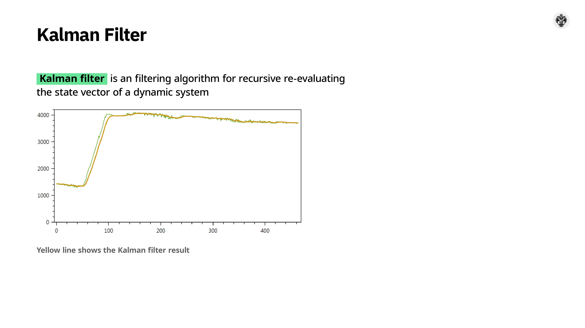
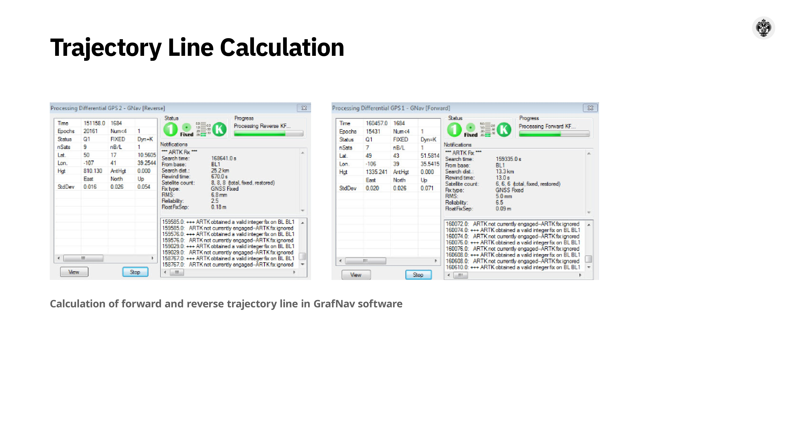
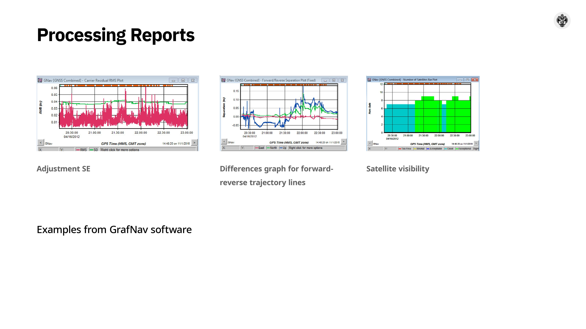
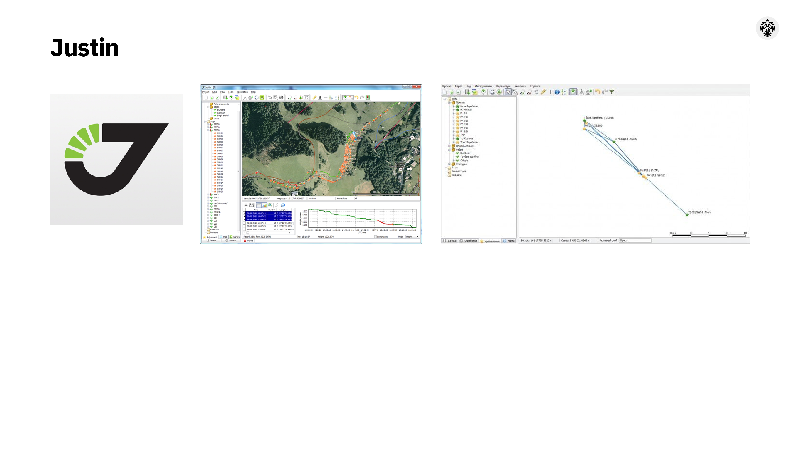
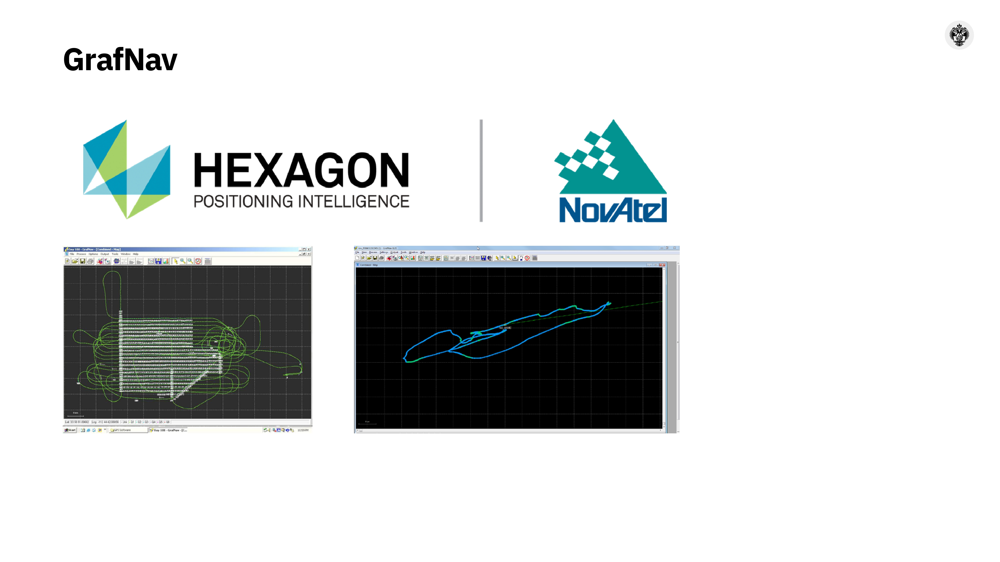
7 Real-time Kinematic
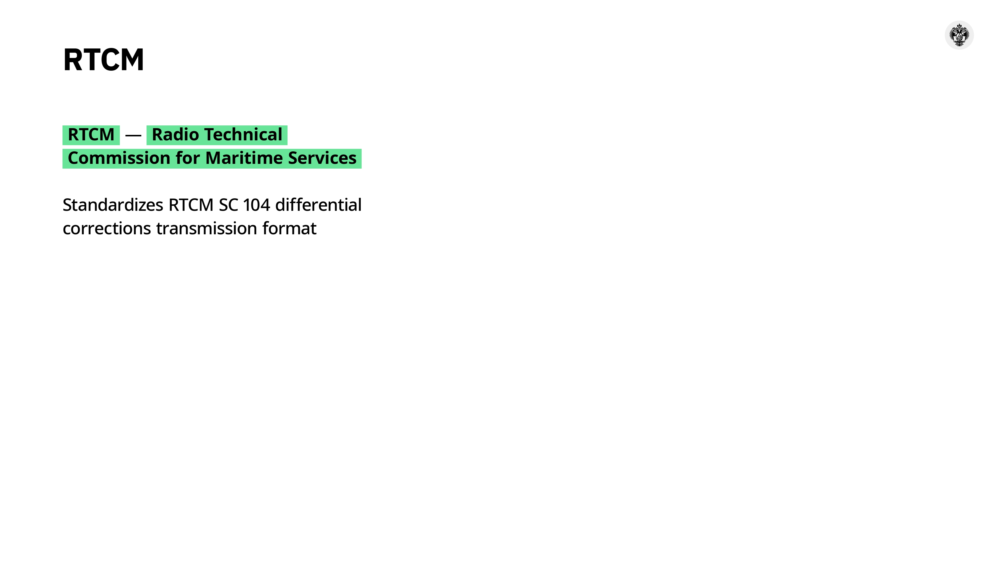
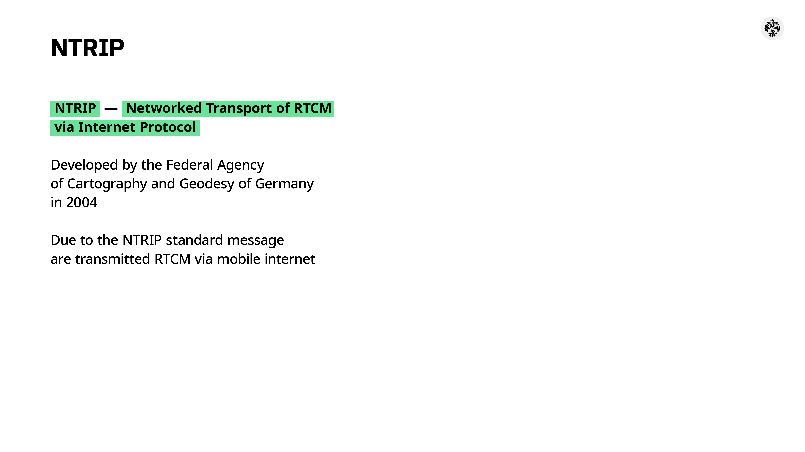
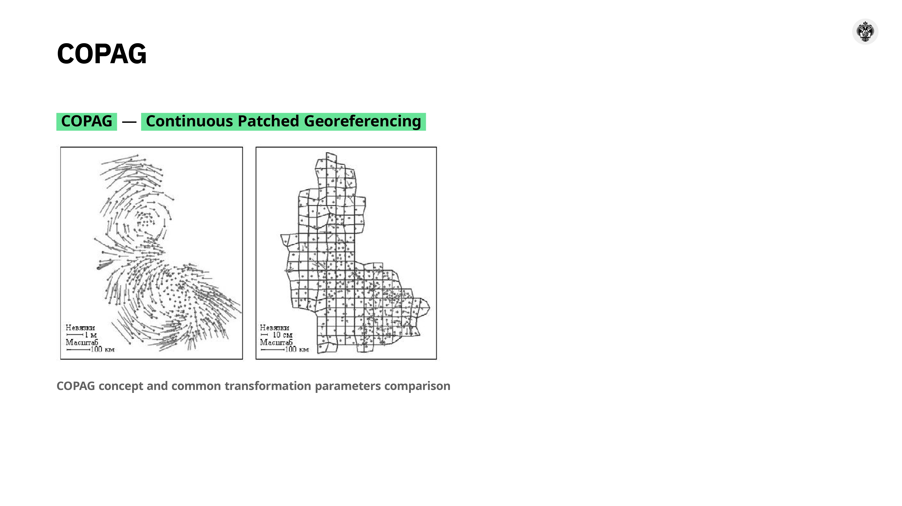
8 Treatment Kinematic Measurements in RTKLib
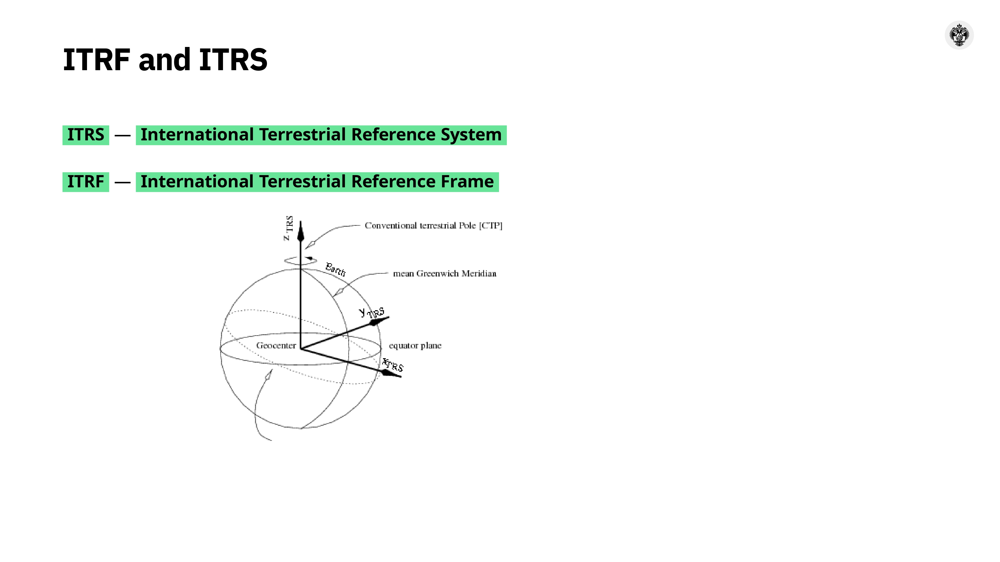
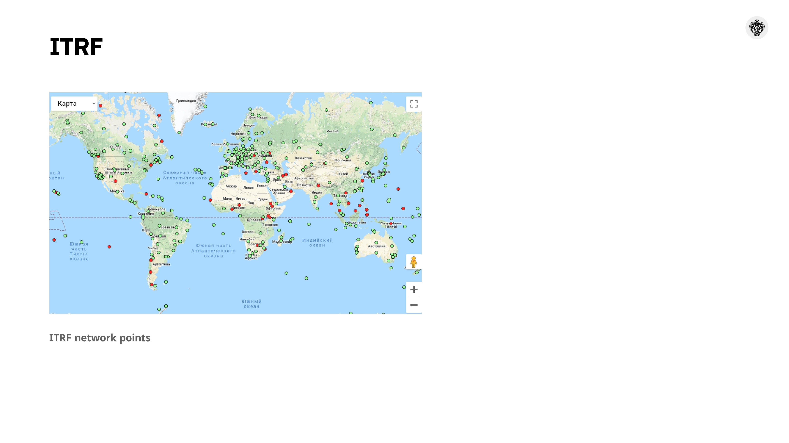